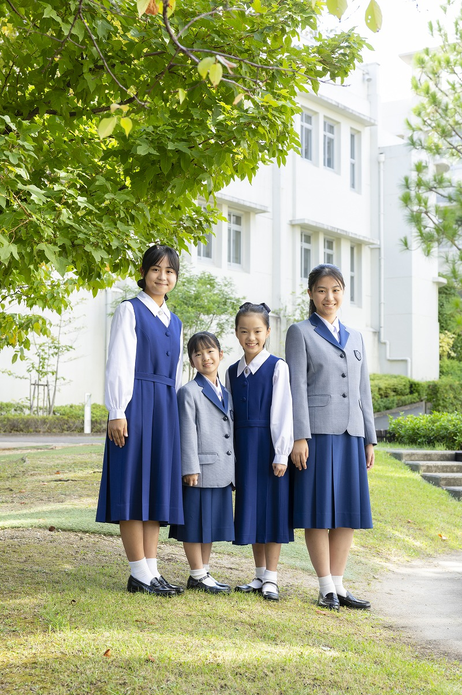

本校では、さまざまな段階の方々をお迎えしています。
どの段階の方も、どうぞ安心してお越しください。
入試の場、というと身構えてしまわれるかもしれません。
けれども、本校がこの日にお伝えしたいのは、お子さまを評価する話ではなく、
私たちが、入試をどんな“対話の場”にしたいと考えているか。
そのお話です。
1923年、本校は創立されました。
それから100年余り、変わらず受け継いできた言葉があります。
初代学院長、マザー・マイヤーが残した言葉です。
「世界の中心は、自分ではない」
そのことに気づける、静かな謙虚さ。
その気づきが、人と人との“対話”を生むのだと、私たちは考えています。
学ぶと、世界の見え方が変わる。
見え方が変わると、生き方を考える。
生き方を考えると、自分の使命に気づく。
そして、自分の使命に気づくために、人は、他者と対話する。
それが、Big You, small i. の意味するところです。
100年前から、本校は、この言葉を真ん中に置いて、
お子さまたちと祈り、学び、対話を重ねてきました。
これからお伝えする、6月20日のお話も、
そして、本校の入試のかたちも、すべて、
この言葉から、始まっています。
本校の入試は、SQ対話型入試です。
SQ（社会的知能指数）
「かかわり」の、知能指数。
これまで多くの入試では、
ひとつの正解を、いかに早く・正確に導き出せるか、
ということが問われてきました。
それは、IQ（知能指数）。
“見える学力”とも言われる力です。
けれど、そのほとんどを、AIが代替できるようになりました。
ならば、入試で、本当に見たいものは何か。
正解のない問いを前にしたとき、
相手と対話を重ねながら、納得解を見つけていく力。
状況の背景を察する力、第3の道を拓く力、共に創り上げる力。
“見えない学力”とも言われる、これらの力です。
それは、人間にしかできない、“一生もの”の力。
そんな時代だからこそ、本校は、12年かけて育てたい力の芽を、
入試の場でも、見つめたいと思っています。
具体的な内容は、6月20日、当日にお伝えします。
各時間帯、約90分です。
受付開始は9:00。お時間に余裕をもってお越しください。
各時間帯のなかで、私たちは、二つの時間をご用意しています。
教頭・入試担当委員からご説明いたします。
SQ対話型入試で、私たちが何を見つめているのか。
ご家庭でどのように過ごしていただきたいか。
実際の入試の場面に近い体験を、丁寧にご用意しています。
お子さまには、楽しく、安心して取り組んでいただける時間です。
入試の具体的な内容については、当日、本校教員から直接お伝えします。
ひとつだけ、お伝えしておきたいことがあります。
私たちは、お子さまの「できていないところ」を探すために、
この場を用意しているのではありません。
入試体験の時間も、保護者の方々とお話しする時間も、
私たちが見つめたいのは、お子さまの良さ、ご家庭の温かさ。
そのまま、そこにあるもの、です。
うまく答えなくても、いい。
言葉が拙くても、いい。
何かしらの形で、お子さまが表現してくれたら…
それを、私たちが受け取る。そういう場にしたいと思います。
肩の力を抜いて、お子さまと一緒に、
安心していらしてください。
直前の特別な対策は、必要ありません。
けれど、日々の積み重ねは、何より大切です。
ご家庭でのお子さまとの対話、
自然のなかで過ごす時間、
家族のために手を動かす時間。
その一つひとつが、お子さまの内側で、
静かに、確かに、力になっていきます。
具体的な準備のお話は、6月20日、当日にお伝えします。
気になる見出しをタップすると、お答えが開きます。
本校の宗教教育は、人間の土台としての宗教教育です。
お祈りや神様のことを学びますが、学問的なことよりも、
「自分は愛されている」という自尊心を育てたり、
自然を愛したり、感謝の心を学んだりすることを、大切にしています。
信者でないご家庭の方が、ほとんどです。
A日程（9月）、B日程（10月）、C日程（11月）の3回、実施いたします。
詳しい日程は、本校公式サイトの入試要項をご覧ください。
ぜひ、お越しください。
お子さまを支えてくださる方々が、本校の空気に触れてくださることを、私たちは大切にしています。
ご同伴いただけます。
お気兼ねなく、ご家族でいらしてください。
本校は阪急今津線「小林（おばやし）」駅から徒歩7分です。
通学の所要時間は1時間30分までとさせていただいています。
1年生入学直後は送迎から始まり、やがて地区ごとの集団下校へと、
お子さまたちは自然に自立していきます。
下校時は半年間、教員が小林駅までお送りします。
通学路や電車では、併設の中高生も見守ります。
放課後児童クラブ「マイヤークラブ」がございます。
学院敷地内のロザリオヒル教育施設で、宿題・おやつのあと、
異学年のお友達と19時まで過ごせます。
12年生（高校3年生）の保護者の方々に、振り返りを寄せていただいた手記より。
小学校受験の時、娘はあまりにも幼く無邪気で、
受験させること自体に不安と葛藤がありました。
娘にとって本当に良かったのかと、不安がよぎることもありました。
けれど、いざ入学すると、先生方のきめ細やかなお心遣い、お優しい対応に、
日に日に不安がなくなり、本当にお世話になることができてよかったという気持ちが
強くなりました。
それは、小中高と学年が上がっていくごとに強い確信となり、
娘も「自分の学校は小林聖心以外に考えられない」と、
私たちの選択に感謝を伝えてくれる機会が何度もありました。
娘に、その12年間に小林聖心の学校生活をプレゼントできたことを、
親として、大変うれしく思っております。
— 12年生保護者A
申込期間：4月29日（水）〜 6月19日（金）
お申込時に、以下をお選びください。
お申込みは、外部の申込システム（ミライコンパス）にてお願いいたします。
持ち物
※ 上履き・スリッパはご不要です。
ここまでお読みくださり、ありがとうございました。
6月20日の場が、
お子さまにとって、ご家族にとって、
何かを受け取っていただける時間になればと、
私たち教職員は、準備をしてお待ちしています。
皆様のご来校を、心よりお待ちしております。